We set two indexes, i and j, i to indicate the start of slide window, and j for end. First we move j to the right, once we find a duplicated value, we stop, and calculate the length. Then, we move i to right to remove the first duplicated value. We also use a dict to store where we store the value.
1 2 3 4 5 6 7 8 9 10 11 12 13 14 15 16
deflengthOfLongestSubstring(self, s): """ :type s: str :rtype: int """ i, j = 0, 0 max_length = 0 window_map = {} while j < len(s): if s[j] in window_map: # very important, because we don't remove useless values when we move i i = max(window_map[s[j]], i) max_length = max(max_length, j - i + 1) window_map[s[j]] = j + 1 j += 1 return max_length
deffindMedianSortedArrays(self, nums1, nums2): """ :type nums1: List[int] :type nums2: List[int] :rtype: float """ # divide all elements in {A,B} into two parts with equal length, # len(left_part)=len(right_part) # max(left_part)≤min(right_part) # median = (max(left_part) + min(right_part)) / 2 m, n = len(nums1), len(nums2) if m > n: nums1, nums2, m, n = nums2, nums1, n, m if n == 0: return ValueError
imin, imax, half_len = 0, m, (m+n+1)//2 while imin <= imax: # each loop, take the mid value as i i = (imin+imax)//2# binary search j = half_len - i if i < m and nums2[j-1] > nums1[i]: # i is too small, must increase it imin = i + 1# binary search elif i > 0and nums1[i-1] > nums2[j]: # i is too big, must decrease it imax = i - 1# binary search else: # i is perfect, find the max value of left if i == 0: max_of_left = nums2[j-1] elif j == 0: max_of_left = nums1[i-1] else: max_of_left = max(nums1[i-1], nums2[j-1])
# if odd, left == right, just return left if (m + n) % 2 == 1: return max_of_left
# j is perfect, find the min value of right if j == n: min_of_right = nums1[i] elif i == m: min_of_right = nums2[j] else: min_of_right = min(nums1[i], nums2[j])
return (max_of_left + min_of_right)/2.
longestPalindrome (dp) O(TP)
We set two indexes,’i’ and ‘j’, i to indicate the length of slide window, j to indicate the start of slide window, the dp formular is:
P(i, j) = P(i+1, j-1) + 2, if s[i] == s[j].
Note:
P(i, i) = 1
since ‘aa’ is also palindrome, so for P(i, i+1) = 2 if s[i] = s[i+1]
deflongestPalindrome(self, s): """ :type s: str :rtype: str """ if len(s) < 2or s == s[::-1]: return s m = len(s) dp = [[0] * m for _ in range(m)] ret = 0 ret_pos = set() for i in range(m): if i + 1 < m: dp[i][i+1] = 2if s[i] == s[i+1] else0# even dp[i][i] = 1# odd for i in range(m): # i is the length of the slide window for j in range(m): # j is the start point of slide window if j + i >= m: break if i == 0: # for the length of window is zero dp[j][j+i] = 1 # for each slide windor, grow from the sub-problem elif dp[j+1][j+i-1] > 0and s[j] == s[j+i]: dp[j][j+i] = dp[j+1][j+i-1] + 2 if dp[j][j+i] > ret: # update the max length ret = dp[j][j+i] ret_pos = (j, j+i) return s[ret_pos[0]:ret_pos[1]+1]
isMatch (dp) O(MN)
We firstly, rephrase the p, let it divide as single pattern, such as [“a”, “b”, ‘.’, ‘.’]. Then, according to the pattern p, we check string s from the end to the front. We use a recursive function like this:
For specific char at the end of p, such ‘a’, we check whether there is a ‘a’ at the end of s.
For common char ‘.’ at p, we match any single char at the end of s.
For ‘a*’, we use a loop to iterate all possible cases to call recursive function, such as, to match ‘a’, ‘aa’, ‘aaa’,…
For ‘.*’, based on the previous method, we also check match empty string case.
defisMatch(self, text, pattern): memo = {} defdp(i, j): if (i, j) notin memo: if j == len(pattern): ans = i == len(text) else: first_match = i < len(text) and pattern[j] in {text[i], '.'} if j+1 < len(pattern) and pattern[j+1] == '*': # with '*' # match empty or match first char but still keep the pattern ans = dp(i, j+2) or first_match and dp(i+1, j) else: # without '*', just continue ans = first_match and dp(i+1, j+1)
memo[i, j] = ans return memo[i, j]
return dp(0, 0)
maxArea (trick) O(n)
We set i = 0, and j = len(heights), each time, we move the shorter height to find a higher height, and recalculate the max area. Beceuase if the next height is shorter than current height, it also has a short length on x-axis, it cannot have a larger volumn.
Note: we cannot use dp, since this problem doesn’t have the optimal sub-structure.
This trick works, because we fasten the i and j from the outside to inside, the width will decrease, only if the height increase, there may exist a larger area. And why we move the shorter height, because, if we fix the shorter height, and move the higher height, the min height still is the shorter height, the max area will only decrease with the width.
1 2 3 4 5 6 7 8 9 10 11 12 13 14 15 16 17
defmaxArea(self, height): """ :type height: List[int] :rtype: int """ idx_s, idx_e = 0, len(height)-1 max_area = 0 while idx_s < idx_e: max_area = max(max_area, min( height[idx_s], height[idx_e]) * (idx_e - idx_s)) # each time, we fasten the shorter height, since only this direction has a better solution # area formed between the lines will always be limited by the height of the shorter line if height[idx_s] < height[idx_e]: idx_s += 1 else: idx_e -= 1 return max_area
threeSum (trick) O(n^2)
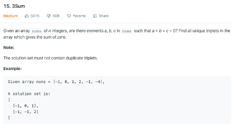
We firstly sort the array, and then set three indexes, the first one is i, after we fix the i, we set j at the i+1, and k at the n-1, then we want the sum(s[j], s[k]) is -s[i], if the sum is less, we move the j=j+1, else if the sum is larger, we move the k=k-1(since the array is sorted).
defthreeSum(self, nums): res = [] nums.sort() for i in range(len(nums)-2): if i > 0and nums[i] == nums[i-1]: # avoid repeat continue l, r = i+1, len(nums)-1 while l < r: s = nums[i] + nums[l] + nums[r] if s < 0: l += 1 elif s > 0: r -= 1 else: res.append((nums[i], nums[l], nums[r])) while l < r and nums[l] == nums[l+1]: # avoid repeat l += 1 while l < r and nums[r] == nums[r-1]: # avoid repeat r -= 1 l += 1 r -= 1 return res
We use two indexes, I and j, and we let the I firstly move forward n steps, and then we move these two indexes together, once the I reach the end, the j is at last n-th node.
1 2 3 4 5 6 7 8 9 10 11 12 13 14 15 16 17
defremoveNthFromEnd(self, head, n): """ :type head: ListNode :type n: int :rtype: ListNode """ p = ListNode(None) p.next = head p_b = p q = p for _ in range(n): p = p.next while p.next: p = p.next q = q.next q.next = q.next.next return p_b.next
generateParenthesis (recursive) O(4^n/√2)
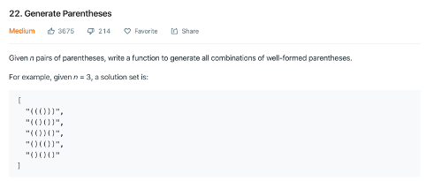
We use a count n to record the remaining available left parentheses, and another count k to record the assigned left parentheses.
if n == 0 and k == 0, output
If n == 0 and k>0, recursive(n, k-1), add ‘)’
If n > 0 and k == 0, recursive(n-1, k+1), add ‘(’
else we should try two directions: recursive(n-1, k+1), add ‘(’, and recursive(n, k-1), add ‘)’
We set j=len(n)-1, and set i=len(n)-2, we search the i from end to start, once we found n[i] < n[j], we swop n[i] and n[j], then we reverse n[i:j+1]
Note, from the last value, once we find a smaller value, we reverse all values between these two values.
1 2 3 4 5 6 7 8 9 10 11 12 13 14
defnextPermutation(self, nums): """ :type nums: List[int] :rtype: None Do not return anything, modify nums in-place instead. """ i = len(nums) - 2 while i >= 0and nums[i+1] <= nums[i]: i -= 1 if i >= 0: j = len(nums) - 1 while j >= 0and nums[j] <= nums[i]: j -= 1 nums[i], nums[j] = nums[j], nums[i] nums[i+1:] = nums[:i:-1]
longestValidParentheses
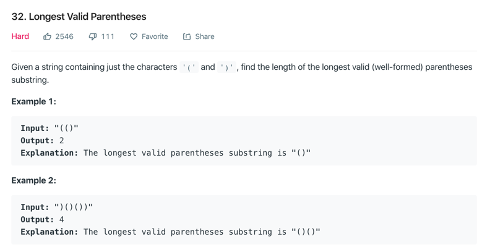
longestValidParentheses (stack trick) O(n)
The idea behind this problem is, when we find a ‘)’ (stack is not empty), we need to check where does this start. So we record the position in the stack.
Once we encounter an invalid char(still need pop), or we has a ‘(’ now, we push its position into the stack, after that, when we encounter a “)”, we firstly pop a value from the stack, then we can always found the start point of the valid sub-path at the stack[-1].
1 2 3 4 5 6 7 8 9 10 11 12 13 14 15 16 17
deflongestValidParentheses(self, s): """ :type s: str :rtype: int """ max_ret = 0 stack = [-1] for i in range(len(s)): if s[i] == '(': stack.append(i) else: stack.pop() if len(stack) == 0: stack.append(i) # last invalid point else: max_ret = max(max_ret, i - stack[-1]) # i-stack[-1] is current valid length return max_ret
longestValidParentheses (dp) O(n)
the i-th element of dp arary indicates the length of the longest valid substring ending at i-th index. And because the valid substing always ends with ‘)’, we will have:
s[i-1,i] = ‘()’, dp[i] = dp[i-2]+2, (dp[i-1]=0)
s[i-1,i] = ‘))’, we need to check s[i-dp[i-1]-1], the last char before the longest substring ending at [i-1] whether is ‘(’, if it is, dp[i] = dp[i-1] + dp[i-dp[i-1]-2]+2, the longest substing a [i-1] + substring before last valid substring + 2.
1 2 3 4 5 6 7 8 9 10 11 12 13 14 15
deflongestValidParentheses(self, s): """ :type s: str :rtype: int """ maxans = 0 dp = [0] * len(s) for i in range(1, len(s)): if s[i] ==')': if s[i-1] == '(': dp[i] = (dp[i-2] if i >=2else0) + 2 elif i - dp[i-1] > 0and s[i - dp[i-1] - 1] == '(': dp[i] = dp[i - 1] + (dp[i - dp[i - 1] - 2] if (i - dp[i - 1]) >= 2else0) + 2 maxans = max(maxans, dp[i]) return maxans
search (binary search trick) O(log n)
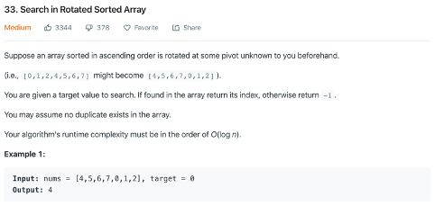
For example, we take [4, 5, 6, 7, 0, 1, 2] as input, and s=0, e=n-1, m=(s+e)//2
We make these four assumptions:
the axis locates at right, and target is at left: nums[s] <= target < nums[m] -> recursive(s, m-1)
the axis locates at left, and target is at right: nums[m] < target <= nums[e] -> recursive(s+1, m)
the axis locates at right, and target is at right: nums[m] > nums[e] -> recursive(m+1, e)
the axis locates at left, and target is at left: nums[s] > nums[m] -> recursive(s, m-1)
For third case, there is a hidden condition, , if nums[m] > nums[e], this means the axis locates at right, so the nums[s] must be less than nums[m], at this condition, we only need to check the target if it locates at the right, since if the target locates at left, this case will be the first case. The same idea for fourth case.
Besides, the recursion doesn’t break the rules of rotated list.
defsearch(self, nums, target): """ :type nums: List[int] :type target: int :rtype: int """ ifnot nums: return-1 start = 0 end = len(nums) - 1
defrecursion(s, e): if e < s: return-1 m = (s+e)//2 if nums[m] == target: return m # target locates at non-axis side (and is left side) if nums[s] <= target < nums[m]: return recursion(s, m-1) # target locates at non-axis side (and is right side) elif nums[m] < target <= nums[e]: return recursion(m+1, e) # target locates at axis side (and is right side) elif nums[m] > nums[e]: return recursion(m+1, e) else: # target locates at axis side (and is left side) return recursion(s, m-1)
return recursion(start, end)
searchRange (Binary Search trick) O(log n)
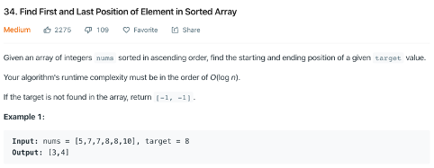
we use two binary search, one search the left boundary and another for the right boundary.
We modify the original binary search, make it to continue search when we found the target value. Also, once right_index <left_index, we return left_index for the left boundary search, and return right_index for the right one.
defsearchRange(self, nums, target): """ :type nums: List[int] :type target: int :rtype: List[int] """ defrecursiveLeft(s, e): if e < s: return s m = (s+e)//2 if nums[m] < target: return recursiveLeft(m+1, e) else: return recursiveLeft(s, m-1)
defrecursiveRight(s, e): if e < s: return e m = (s+e)//2 if nums[m] <= target: return recursiveRight(m+1, e) else: return recursiveRight(s, m-1)
left, right = recursiveLeft(0, len(nums)-1), recursiveRight(0, len(nums)-1) # once we cannot found the value, the left will right-1 return [left, right] if left <= right else [-1, -1]
defcombinationSum(self, candidates, target): """ :type candidates: List[int] :type target: int :rtype: List[List[int]] """ ret = [] candidates = sorted(candidates) T = len(candidates)
defloop(i, cur_sum, solution): for i in range(i, T, 1): item = candidates[i] new_sum = cur_sum+item if new_sum < target: loop(i, new_sum, solution + [item]) elif new_sum > target: return else: ret.append(solution + [item])
loop(0, 0, []) return ret
firstMissingPositive (trick: hash with mod position) O(n)
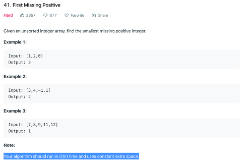
The biggest challenge is, we can only use extra constant space which means we cannot set up a hash table with O(n) space. So the solution use the input array as the has table.
Using: nums[nums[i] % n] += n(first to handle all <0 or >=n to 0), this to mark a bin has been covered, after iterating all values, we can check the value which less than n, the first value we found is the final result.
1 2 3 4 5 6 7 8 9 10 11 12 13 14 15 16 17
deffirstMissingPositive(self, nums): """ :type nums: List[int] :rtype: int """ nums.append(0) n = len(nums) for i in range(len(nums)): # delete those useless elements if nums[i] < 0or nums[i] >= n: nums[i] = 0 # use the index as the hash to record the frequency of each number for i in range(len(nums)): nums[nums[i] % n] += n # +n and %n to make the original value do not be overlaped for i in range(1, len(nums)): if nums[i] < n: return i return n
Trap (two dp, left and right) O(n)
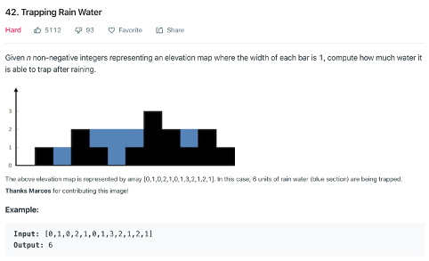
We use two dp, to record both max heights from left and right respectively.
dp_l[i] = max(dp_l[i-1], height[i])
dp_r[i] = max(dp_r[i+1], height[i])
Then, each bin’s water volume is: min(dp_l[i], dp_r[i]) - height[i].
1 2 3 4 5 6 7 8 9 10 11 12 13 14 15 16 17 18
deftrap(self, height): """ :type height: List[int] :rtype: int """ ifnot height: return0 dp_l, dp_r = [0] * len(height), [0] * len(height) dp_l[0] = height[0] dp_r[-1] = height[-1] ret = 0 for i in range(1, len(height)): dp_l[i] = max(dp_l[i-1], height[i]) for i in range(len(height)-2, -1, -1): dp_r[i] = max(dp_r[i+1], height[i]) for i in range(1, len(height)): ret += min(dp_l[i], dp_r[i]) - height[i] return ret
Permute (loop call recusive) O(2^n)
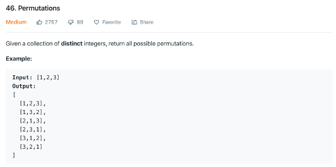
1 2 3 4 5 6 7 8 9 10 11 12 13 14
defpermute(self, nums): """ :type nums: List[int] :rtype: List[List[int]] """ defrecursive(nums, path, res): ifnot nums: res.append(path) for i in range(len(nums)): recursive(nums[:i] + nums[i + 1:], path + [nums[i]], res)
res = [] recursive(nums, [], res) return res
Rotate (trick) O(n^2)
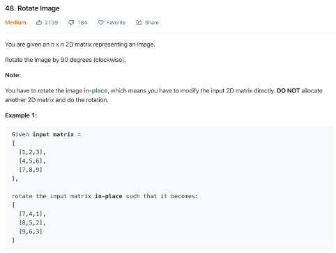
First reverse and then transpose
1 2 3 4 5 6 7 8 9 10 11 12 13
defrotate(self, matrix): """ :type matrix: List[List[int]] :rtype: None Do not return anything, modify matrix in-place instead. """ h = len(matrix) # reverse for i in range(0, h//2, 1): matrix[i], matrix[h-i-1] = matrix[h-i-1], matrix[i] # transpose for i in range(0, h, 1): for j in range(0, i, 1): matrix[i][j], matrix[j][i] = matrix[j][i], matrix[i][j]
groupAnagrams (hash) O(m)
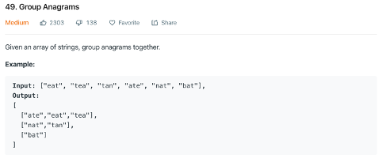
using collections.defaultdict(list), take the tuple(sorted(s)) as the key of hash table.
1 2 3 4 5 6 7 8 9
defgroupAnagrams(self, strs): """ :type strs: List[str] :rtype: List[List[str]] """ ans = collections.defaultdict(list) for s in strs: ans[tuple(sorted(s))].append(s) return ans.values()
maxSubArray (trick) O(n)
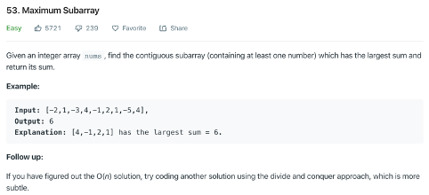
We scan the array from the left to right, we use a list to record the accumulated sum, only if the left sum is positive, we use it, otherwise, this negative value should be discarded.
So the sum is: nums[i] = max(0, nums[i-1]) + nums[i]
For each continue positve sub-list, we compare to record the maximum sum: ret = max(ret, nums[i]).
1 2 3 4 5 6 7 8 9 10
defmaxSubArray(self, nums): """ :type nums: List[int] :rtype: int """ ret = nums[0] for i in range(1, len(nums)): nums[i] = max(0, nums[i-1]) + nums[i] ret = max(ret, nums[i]) return ret
canJump (greedy) O(n)
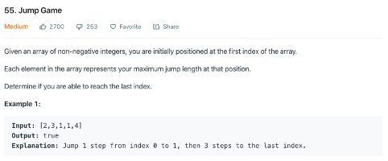
We scan the list from the left to right up to the farest value we can reach, each time once we get a new value, we modify the farest value, so if we can attend the final position, return true, otherwise return false.
1 2 3 4 5 6 7 8 9 10 11
defcanJump(self, nums): """ :type nums: List[int] :rtype: bool """ m = 0 for i in range(0, len(nums)): if i > m: returnFalse m = max(m, i+nums[i]) returnTrue
merge (greedy) O(n)
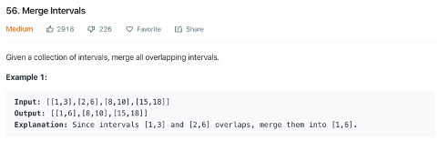
We firstly sort the input, then using a list, add the first tuple into the list, each time check whether the last tuple’s right value is larger than the second tuple’s first value, if yes, we merge this two, else only insert the tuple into the list.
defuniquePaths(self, m, n): """ :type m: int :type n: int :rtype: int """ ifnot m ornot n: return0 # Create a empty mxn matrix matrix = [[1]*n for i in range(m)]
for i in range(1, m): for j in range(1, n): matrix[i][j] = matrix[i][j-1] + matrix[i-1][j]
return (matrix[m-1][n-1])
minPathSum (dp) O(mn)
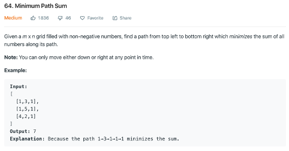
dp[i][j] = min(dp[i][j-1], dp[i-1][j]) + m[i][j]
1 2 3 4 5 6 7 8 9 10 11 12 13
defminPathSum(self, grid): """ :type grid: List[List[int]] :rtype: int """ for i in range(1, len(grid)): grid[i][0] += grid[i-1][0] for i in range(1, len(grid[0])): grid[0][i] += grid[0][i-1] for i in range(1, len(grid)): for j in range(1, len(grid[0])): grid[i][j] = min(grid[i][j-1], grid[i-1][j])+grid[i][j] return (grid[-1][-1])
climbStairs (dp) O(n)
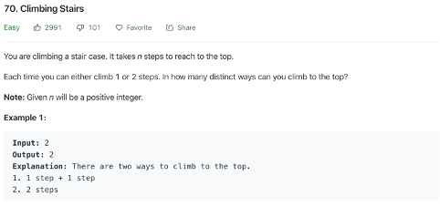
dp[i] = dp[i-1] + dp[i-2], dp[0]=1, dp[1] = 1
1 2 3 4 5 6 7 8 9 10 11 12
defclimbStairs(self, n): """ :type n: int :rtype: int """ memo = [0] * (n+1) memo[0], memo[1] = 1, 1 if n > 1: for i in range(2, n+1): memo[i] = memo[i-1] + memo[i-2]
return memo[n]
minDistance (dc) O(mn)
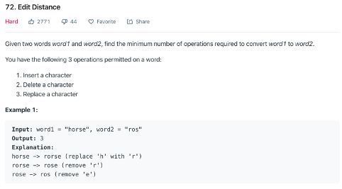
We define a recursive function: recursive(word1, word2, i, j, memo), which returns the amount of operations for word1[i:] and word2[j:], and we use memo to record the sub-problem.
For the word1[i] and word2[j], if they are equal, we make memo[i][j] = recursive(word1, word2, i+1, j+1, memo). Else, we define these three operations:
insert = 1 + recursive(word1, word2, i, j+1, memo), we insert word2[j] before word1[i], so they are eaqual, then we compare word1[i] with word2[j+1].
delete = 1 + recursive(word1, word2, i+1, j, memo), we delete word2[j], then we compare word1[i+1] with word2[j].
replace = 1 + recursive(word1, word2, i+1, j+1, memo), we replace word1[i] with word2[j], so they are equal, so we continue to compare word1[i+1] with word2[j+1].
and make memo[i][j] = min(insert, delete, replace).
For the termination of the recursion, when i=m, j=n, it means we’ve handled all words, so return 0, else, when i=m, we return n-j, when i=n, we return m-i, since if we’ve already handled one word, we only need to insert the remaining chars in another word.
defminDistance(self, word1, word2): """ :type word1: str :type word2: str :rtype: int """ # word1 is larger than word2 if len(word2) > len(word1): word2, word1 = word1, word2 memo = [[-1for j in range(len(word2))] for i in range(len(word1))]
defrecursive(word1, word2, i, j, memo): if i == len(word1) and j == len(word2): return0 if i == len(word1): return len(word2)-j if j == len(word2): return len(word1)-i if memo[i][j] == -1: if word1[i] == word2[j]: ans = recursive(word1, word2, i+1, j+1, memo) else: insert = 1 + recursive(word1, word2, i, j+1, memo) delete = 1 + recursive(word1, word2, i+1, j, memo) replace = 1 + recursive(word1, word2, i+1, j+1, memo) ans = min(insert, delete, replace) memo[i][j] = ans return memo[i][j] return recursive(word1, word2, 0, 0, memo)
sortColors (trick) O(n)
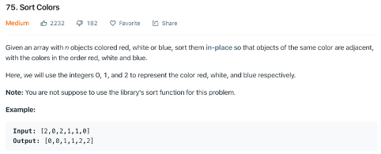
We use three indexes, i, j, k, the i and j indicate the range that we need to handle, and k indicates the value we are handling. For the nums[k], there are three cases:
nums[k] == 0, we swap nums[i] and nums[k], then i+=1, k+=1.
nums[k] == 1, do nothing, just k+=1
nums[k] == 2, we swap nums[j] and nums[k], then j-=1.
Actually, the i indicates the end of “0” values, the j for start of “2” values, each time, we encounter a “0”, we swap it to the end of “0” values, and for “2” values, we swap it to the start of “2” values, so at final, the middle are all “1” values.
1 2 3 4 5 6 7 8 9 10 11 12 13 14 15 16 17
defsortColors(self, nums): """ :type nums: List[int] :rtype: None Do not return anything, modify nums in-place instead. """ i, k, j = 0, 0, len(nums)-1 while k <= j: if nums[k] == 0: nums[i], nums[k] = nums[k], nums[i] i += 1 k += 1 elif nums[k] == 1: k += 1 elif nums[k] == 2: nums[j], nums[k] = nums[k], nums[j] j -= 1 return nums
minWindow (trick hash) O(n)
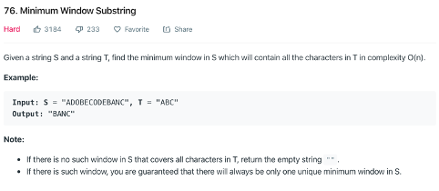
We use two indexes i and j to indicate the start and end of the slide window. We also use a hash table to count amout of each char in T. The hash tbale m looks like a balance wallet, we first add chars of T into it, then once we encounter chars in S, we minus from m. So for m>0 means there is still char we need to find, and m<0 means we remove much more than we need in T. We also use a count=len(T) to identify whether we have encounter all chars within T. First, we move the i to right, and we minus one from hash table m[s[i]], and we only minus one from count if we found m[s[i]]>0(means we remove a target char), which means there are still uncount chars within T(because we may encounter several same chars, so the m[s[i]] could be negative, but for that time, we won’t minus from count). Once count equals to zero, we move j to right, each time we add one to m[s[i]], and we add one to count if we found m[s[i]]>0, which means there are still uncount chars within T again.
defminWindow(self, s, t): """ :type s: str :type t: str :rtype: str """ import sys import collections m = collections.defaultdict(int) # m just like a balance wallet # we first add chars of T into it # then once we encounter chars in S # we minus from m # so for m>0 menas there is still char we need to find # m<0 means we remove much more than we need in T for c in t: m[c] += 1 j = 0
# identify how many remaining chars in T we still need to find count = len(t) minLen = sys.maxsize minStart = 0 for i in range(len(s)): # only when m[s[i]] > 0, means remaining chars in t if m[s[i]] > 0: count -= 1 m[s[i]] -= 1 # we have found all chars in T, we start to move j while count == 0: if (i - j + 1) < minLen: minLen = i-j+1 minStart = j m[s[j]] += 1 # when m[s[i]] > 0, means we remove too much target chars # we increase count to mark there are chars we need to find if m[s[j]] > 0: count += 1 j += 1
if minLen < sys.maxsize: return s[minStart:minStart+minLen] return""
Subsets (dfs) O(2^n)
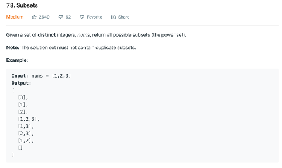
Same with permutation, but also output at intermediate nodes.
defrecursive(nums, index, path, res): res.append(path) for i in range(index, len(nums)): recursive(nums, i + 1, path + [nums[i]], res)
res = [] recursive(sorted(nums), 0, [], res) return res
Exist (dfs) O(mn * len(words))
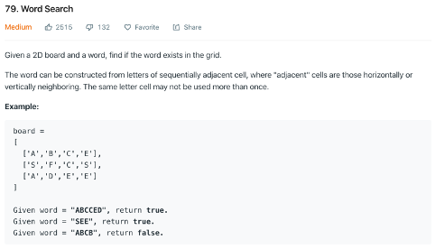
We dedine a recursive function: dfs(row, col, idx), means from nums[row][col] starts finding word[idx:]. We iterative all cells, and only call dfs from the cell which equals to word[0].
Within the recursive function. If idx == len(word), return True, else we check four directions, if it equals to word[idx], we call recursive func, if all fail, return false.
defdfs(row, col, idx): if idx == nword: returnTrue board[row][col] = '#'# mark we have visited if row+1 < nrow and board[row+1][col] == word[idx] and dfs(row+1, col, idx+1): returnTrue if row-1 >= 0and board[row-1][col] == word[idx] and dfs(row-1, col, idx+1): returnTrue if col+1 < ncol and board[row][col+1] == word[idx] and dfs(row, col+1, idx+1): returnTrue if col-1 >= 0and board[row][col-1] == word[idx] and dfs(row, col-1, idx+1): returnTrue board[row][col] = word[idx-1] # unmark returnFalse for i in range(nrow): for j in range(ncol): if board[i][j] == word[0]: if dfs(i, j, 1): returnTrue returnFalse
largestRectangleArea (left and right dp) O(n)
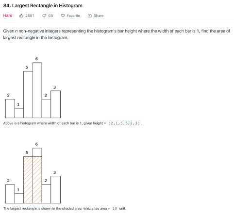
We use two array, left_min and right_min to record the position of first smaller value from left and right, so each rectangle’s area is: height[i] * (right_min[i] - left_min[i] -1)
We set left_min[0]=-1, for left_min[i], we search from j=i-1, each time we found height[j] >= height[i], we set j=left_min[j] to recursively find the first smaller value.
deflargestRectangleArea(self, heights): """ :type heights: List[int] :rtype: int """ max_area = 0 n = len(heights) if n == 0: return0 left_min, right_min = [0] * n, [0] * n left_min[0] = -1 right_min[n-1] = n for i in range(1, n): j = i-1 while j >= 0and heights[j] >= heights[i]: j = left_min[j] left_min[i] = j for i in range(n-2, -1, -1): k = i+1 while k < n and heights[k] >= heights[i]: k = right_min[k] right_min[i] = k for i in range(n): max_area = max(max_area, heights[i] * (right_min[i] - left_min[i]-1)) return max_area
maximalRectangle (greedy) O(mn)
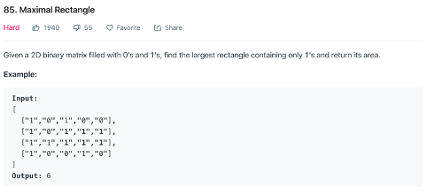
We use three arrays to record the most far height, left boundary and right boundary.
if matrix[i][j] == ‘1’: right[j] = min(right[j], cur_right), else right[j] = n, cur_right = j.
The precess is, firstly we determine the height of the rectangle, then we find the most far left boundary and right boundary of this rectangle. We use cur_left to record the far left boundary of this line, and left[j] to record the far boundary of all lines, so max(left[j], cur_left) gives us the most far left boundary of the rectangle in this line.
defmaximalRectangle(self, matrix): """ :type matrix: List[List[str]] :rtype: int """ if len(matrix) == 0: return0 m = len(matrix) n = len(matrix[0]) left, right, height = [0]*n, [n]*n, [0]*n maxA = 0 for i in range(0, m): cur_left, cur_right = 0, n for j in range(0, n): if matrix[i][j] == '1': height[j] += 1 else: height[j] = 0 for j in range(0, n): if matrix[i][j] == '1': left[j] = max(left[j], cur_left) else: left[j] = 0 cur_left = j+1 for j in range(n-1, -1, -1): if matrix[i][j] == '1': right[j] = min(right[j], cur_right) else: right[j] = n cur_right = j for j in range(0, n): maxA = max(maxA, (right[j]-left[j])*height[j]) return maxA
inorderTraversal (iterative) O(n)
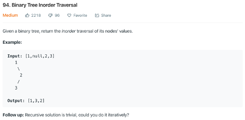
using a stack, each time pop a node, and push its children into the stack by this tuple (node.left, node.val, node.right), each time we found a value, we output it.
Another way: we firstly loop to push left node into the stack up to the most left leaf, each time we pop a node, ouput it, and add its left node recursively again.
1 2 3 4 5 6 7 8 9 10 11 12 13 14 15 16 17 18
definorderTraversal(self, root): """ :type root: TreeNode :rtype: List[int] """ p = root stack = [] output = [] while p or stack: while p: stack.append(p) p = p.left # first, go to the deepest left if stack: p = stack.pop() output.append(p.val) # output the top of stack p = p.right # take one right node # when right is None, will pop a new node at next iteration return output
numTrees (dp) O(n^2)
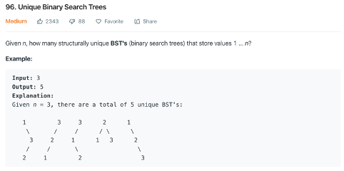
We need to define two functions:
G(n): the number of unique BST for a sequence of length n.
F(i, n), 1 <= i <= n: the number of unique BST, where the number i is the root of BST, and the sequence ranges from 1 to n.
So, G(n) = F(1, n) + F(2, n) + … + F(n, n). And G(0)=1, G(1)=1.
We found that: F(i, n) = G(i-1) * G(n-i).
Combining the above two formulas, we obtain the recursive formula for G(n). i.e.
So we start from G(2), G(2) = G(0) * G(1), G(3) = G(0) * G(2) + G(1) * G(1) + G(2) * G(0), …, finally we get G(n).
Firstly, I want to use 2D dp, but from the above solution, I found, we don’t care about the start point and end pint, we only care about the length of the sub-question. So we can only use 1D dp.
1 2 3 4 5 6 7 8 9 10 11
defnumTrees(self, n): """ :type n: int :rtype: int """ dp = [0] * (n+1) dp[0] = dp[1] = 1 for i in range(2, n+1): for j in range(1, i+1): dp[i] += dp[j-1] * dp[i-j] return dp[-1]
isValidBST (post-order, dfs) O(n)
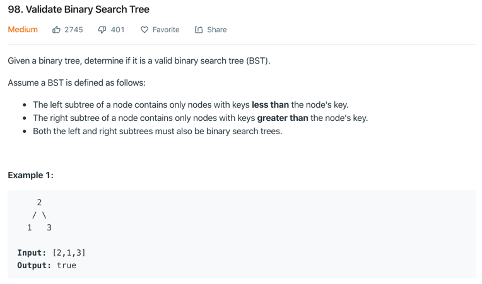
The first solution, we compare from down to up, we get the max and min value of each subtree. So, for a valid node, its value must larger than max value of left subtree and less than min value of right subtree.
The second solution, we compare from up to down, we set a range by two value: low bound and upper bound, each time we enter a left tree, we constrict the upper bound, and when we enter the right tree, we constrict the right bound.
1 2 3 4 5 6 7 8 9 10 11 12 13 14 15 16 17 18
# compare from up to down, we set a range by low bound and upper bound, # each time we enter a left tree, we constrict the upper bound, # and when we enter the right tree, we constrict the right bound defisValidBST(self, root): """ :type root: TreeNode :rtype: bool """ def_dfs(node, lower_bound, upper_bound): ifnot node: returnTrue if node.val <= lower_bound: returnFalse if node.val >= upper_bound: returnFalse return _dfs(node.left, lower_bound, node.val) and _dfs(node.right, node.val, upper_bound)
defisMirror(t1, t2): if t1 isNoneand t2 isNone: returnTrue if t1 isNoneor t1 isNone: returnFalse return (t1.val == t2.val) and isMirror(t1.right, t2.left) and isMirror(t1.left, t2.right)
buildTree (recursive) O(n)
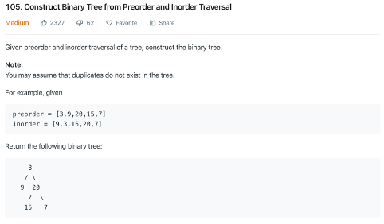
We found that the preorder indicates each root by the level order, and each root will recursively split the inorder into two part, its left and right subtree.
We use a dict to record the position of inorder in order to find the value quickly, then we define a function to construct the tree: def helper(start, end). Each time we give the function the range of its value in the inorder tree, then we recursively construct its left and right subtree as:
Each time we find the deepest left node, and insert it to its parent node’s first right node, then we enter the right node to do the same thing.
1 2 3 4 5 6 7 8 9 10 11
defrecursive(root): if root.left isNoneand root.right isNone: return root if root.left: deepest = recursive(root.left) tmp = root.right root.right = root.left root.left = None deepest.right = tmp if root.right: return recursive(root.right) # the deepest node for upper left node
maxProfit (trick) O(n)
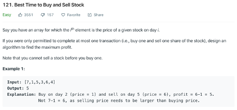
This problem is that, we want to find the tuple of [lowest, highest], and the highest value must appear after the lowest one. So we record the lowest, and each time we update:
lowest = min(lowest, prices[i])
profit = max(profit, prices[i]-lowest)
1 2 3 4 5 6 7 8 9 10 11 12 13 14
defmaxProfit(self, prices): """ :type prices: List[int] :rtype: int """ if len(prices) < 2: return0 lowest = prices[0] rst = 0 for price in prices: if price < lowest: lowest = price rst = max(rst, price-lowest) return rst
maxPathSum (tree dp) O(n)
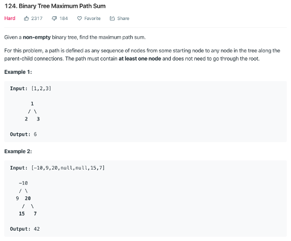
From the bottom to up, at each node, we calculate the max value from left and max value from right, we try to update the result = max(result, left_max+right_max+node.val), and for the return value, we return the max value from left_max+node.val and right_max+node.val, remember we need to compare with 0, since if the value less than 0, we actually delete it from the path.
1 2 3 4 5 6 7 8 9 10 11 12 13 14 15 16 17 18 19
defmaxPathSum(self, root): """ :type root: TreeNode :rtype: int """ if root.left isNoneand root.right isNone: return root.val self.res = -sys.maxsize
We convert the array to set(nums), when we iterate the array, we check whether the nums[i]-1 is in the array, if yes, skip. So once we found a smallest value, then try to check tmp_num+1 one by one, so we can get its consecutive length.
1 2 3 4 5 6 7 8 9 10 11 12 13 14 15 16 17
deflongestConsecutive(self, nums): """ :type nums: List[int] :rtype: int """ lgs = 0 num_set = set(nums) for num in nums: if num - 1notin num_set: current_num = num current_count = 1 while current_num + 1in num_set: current_num += 1 current_count += 1 lgs = max(lgs, current_count)
return lgs
copyRandomList (hash) O(n)
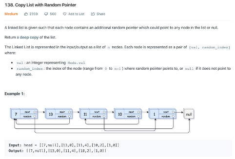
we using collections.defaultdict to store nodes which has been visited.
defcopyRandomList(self, head): """ :type head: Node :rtype: Node """ ifnot head: returnNone ref_map = collections.defaultdict(Node) new_head = current = Node(head.val, None, None) ref_map[head] = new_head # check whether the current head is in the ref_map while head: # check current head has random and is in the ref_map if head.random: if head.random notin ref_map: ref_map[head.random] = Node(head.random.val, None, None) # add random ref to the new list current.random = ref_map[head.random] # check current head has next and is in the ref_map if head.next: if head.next notin ref_map: ref_map[head.next] = Node(head.next.val, None, None) # add next ref to the new list current.next = ref_map[head.next] current = current.next head = head.next return new_head
wordbreak (dp) O(mn)
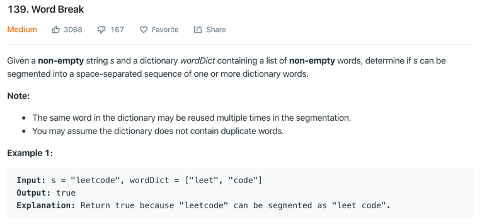
We set dp[i] as the result of s[0:i], and dp[i]=true if dp[i-len(w)] and s[i-len(w):i] == w.
1 2 3 4 5 6 7 8 9 10 11 12 13 14
defwordBreak(self, s, wordDict): """ :type s: str :type wordDict: List[str] :rtype: bool """ n = len(s) d = [False] * (n+1) d[0] = True for i in range(1, n+1): for w in wordDict: if i-len(w) > 0and d[i-len(w)] and s[i-len(w):i] == w: d[i] = True return d[-1]
DetectCycle (trick) O(n)
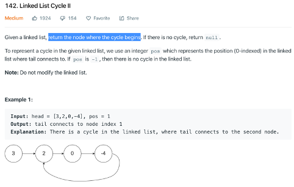
Let the distance from the first node to the node where cycle begins be A, and let say the slow pointer travels A+B. The fast pointer must travel 2A+2B to catch up. The cycle size is N. Full cycle is also how much faster pointer has traveled than slow pointer at meeting point.
A+B+N = 2A+2B
N=A+B
So once meet, we make another pointer start from head, we move slow pointer and this pointer together, once they meet, we found the beginning node. (because B+A=N).
defdetectCycle(self, head): """ :type head: ListNode :rtype: ListNode """ meet = None slow = fast = head while slow and fast and fast.next: slow = slow.next fast = fast.next.next if slow is fast: meet = slow break if meet: p = head q = meet while p and q: if p is q: return p else: p = p.next q = q.next returnNone
LRUCache (double linked list) O(1)
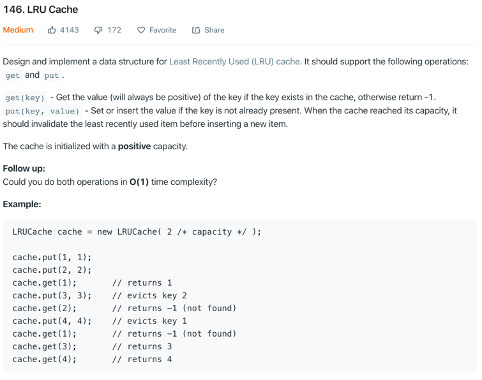
We use double linked list here, and we make two basic operations, called remove and add. The remove is, remove a node by its id from the list, and add is add a node to the end of the tail.
For the get operation, we firstly remove the node and then add.
For the put operation, we add it into the list and remove a node from the head.
defget(self, key): if key in self.dic: n = self.dic[key] self._remove(n) self._add(n) return n.val return-1
defput(self, key, value): if key in self.dic: self._remove(self.dic[key]) n = Node(key, value) self._add(n) self.dic[key] = n if len(self.dic) > self.capacity: n = self.head.next self._remove(n) del self.dic[n.key]
def_remove(self, node): p = node.prev n = node.next p.next = n n.prev = p
def_add(self, node): p = self.tail.prev p.next = node self.tail.prev = node node.prev = p node.next = self.tail
SortList (merge sort or quick sort) O(nlogn)
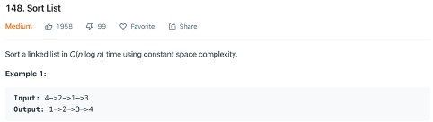
Using three list to store nodes, using head as the partition node, left_head stores the nodes whose value is less than partition node, right_head stores the nodes whose value is larger than partition node. partition_head stores the nodes whose value is equal with its value.
Then we recursive to call the sort function to sort left_head, right_head, at the final, we link these three lists together.
we record the min and max value together, each time, we compare and update these two values.
1 2 3 4 5 6 7 8 9 10 11
defmaxProduct(self, nums): """ :type nums: List[int] :rtype: int """ maximum = b = s = nums[0] for num in nums[1:]: b, s = max(num, num*b, num*s), min(num, num*b, num*s) maximum = max(b, maximum)
return maximum
MinStack (trick) O(n)
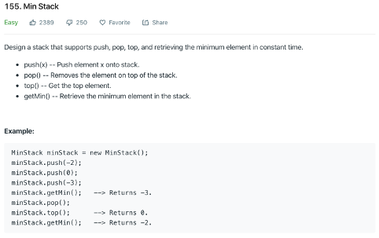
We use another stack to record the current min, each time we push a value, we compare it with the min[-1], if this valuer is larger, we duplicate min[-1], else we push value into the stack. And each time we need to pop a value, we also pop the min[-1].
defgetIntersectionNode(self, headA, headB): """ :type head1, head1: ListNode :rtype: ListNode """ p = headA q = headB if p isNoneor q isNone: returnNone while p isnot q: ifnot p andnot q: returnNone ifnot p: p = headB else: p = p.next ifnot q: q = headA else: q = q.next return q
MajorityElement (trick) O(n)
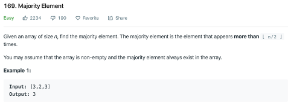
Make two variable, value and count, once count=0, we make value=nums[i], and count+=1, if nums[i]==value, make count+=1, else count-=1.
1 2 3 4 5 6 7 8 9 10 11 12 13 14 15 16 17 18
defmajorityElement(self, nums): """ :type nums: List[int] :rtype: int """ if len(nums) == 1: return nums[0] bucket_key = None bucket_cnt = 0 for i in range(len(nums)): if bucket_cnt == 0: bucket_key = nums[i] bucket_cnt = 1 elif nums[i] == bucket_key: bucket_cnt += 1 else: bucket_cnt -= 1 return bucket_key
Rob (dp) O(n)
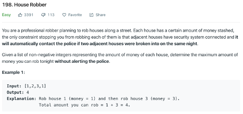
Solution 1: using two arary, max_rob, max_not_rob. max_rob[i] means the max value when we rob nums[i], and max_not_rob means the max value when we don’t rob nums[i].
# f(0) = nums[0] # f(1) = max(num[0], num[1]) # f(k) = max(f(k-2) + nums[k], f(k-1)) defrob(self, nums): """ :type nums: List[int] :rtype: int """ last, now = 0, 0 for i in nums: last, now = now, max(last + i, now) return now
numIslands (BFS DFS) O(mn)
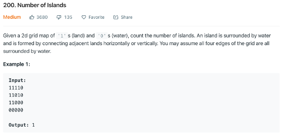
For loop all cells, once found a ‘1’, using stack to do BFS, and for each cell visited, change it to ‘0’
defnumIslands(self, grid): """ :type grid: List[List[str]] :rtype: int """ stack = [] ret = 0 for t in range(len(grid)): for k in range(len(grid[0])): if grid[t][k] == '1': ret += 1 grid[t][k] = '0' stack = [(t, k)] while stack: i, j = stack.pop(0) if i+1 < len(grid) and grid[i+1][j] == '1': stack.append((i+1, j)) grid[i+1][j] = '0' if j+1 < len(grid[0]) and grid[i][j+1] == '1': stack.append((i, j+1)) grid[i][j+1] = '0' if i-1 >= 0and grid[i-1][j] == '1': stack.append((i-1, j)) grid[i-1][j] = '0' if j-1 >= 0and grid[i][j-1] == '1': stack.append((i, j-1)) grid[i][j-1] = '0' return ret
canFinish (dfs) O(n^3)
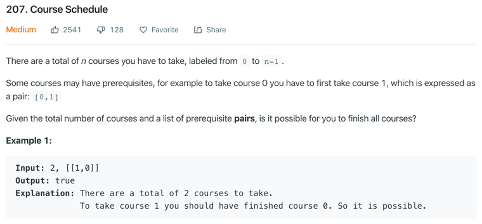
We set an array called visited to record which node has been visited. When we recursively to search each node, we set its visited[i]=-1, once we’ve finished, we set it visited[i]=0. So, when the recursive function found a visited[i]=-1, return False, and visited[i]=1(avoid repeatedly search), return True.
defcanFinish(self, numCourses, prerequisites): """ :type numCourses: int :type prerequisites: List[List[int]] :rtype: bool """ graph = [[] for _ in range(numCourses)] visit = [0for _ in range(numCourses)] for x, y in prerequisites: graph[x].append(y)
defdfs(i): if visit[i] == -1: returnFalse if visit[i] == 1: returnTrue visit[i] = -1 for j in graph[i]: ifnot dfs(j): returnFalse visit[i] = 1 returnTrue
for i in range(numCourses): ifnot dfs(i): returnFalse returnTrue
classTrie(object): def__init__(self): """ Initialize your data structure here. """ self.root = TrieNode(False)
definsert(self, word): """ Inserts a word into the trie. :type word: str :rtype: None """ curr_dict = self.root for i in range(len(word)): idx = ord(word[i]) - ord('a') if curr_dict.dict[idx] isNone: curr_dict.dict[idx] = TrieNode(False) curr_dict = curr_dict.dict[idx] curr_dict.val = True
defsearch(self, word): """ Returns if the word is in the trie. :type word: str :rtype: bool """ curr_dict = self.root for i in range(len(word)): idx = ord(word[i]) - ord('a') if curr_dict.dict[idx] isNone: returnFalse curr_dict = curr_dict.dict[idx] return curr_dict.val
defstartsWith(self, prefix): """ Returns if there is any word in the trie that starts with the given prefix. :type prefix: str :rtype: bool """ curr_dict = self.root for i in range(len(prefix)): idx = ord(prefix[i]) - ord('a') if curr_dict.dict[idx] isNone: returnFalse curr_dict = curr_dict.dict[idx] returnTrue
findKthLargest (heap, quickselect) O(nlogn)
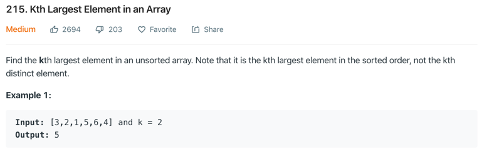
The heap is easy. The quickselect is similar with quicksort, each time we select a pivot, and partition the array to two parts, if the len(left_part)=k-1, we return this pivot, else if larger, we continue to find k-th in the left_part, else, we found the k-len(left_part)-1-th at the right part.
1 2 3 4 5 6 7 8 9 10 11 12 13 14 15 16 17 18
deffindKthLargest(self, nums, k): """ :type nums: List[int] :type k: int :rtype: int """ defquickselect(nums, k): pivot = nums.pop(len(nums) // 2) left = [n for n in nums if n > pivot] ll = len(left) if ll == k-1: return pivot
elif ll > k - 1: return quickselect(left, k) else: return quickselect([n for n in nums if n <= pivot], k - ll - 1) return quickselect(nums, k)
We use two arrays, the first to record the product of left values, and second to record the product of right values. Then result[i] = left[i] * right[i]
1 2 3 4 5 6 7 8 9 10 11 12 13 14 15 16 17 18
defproductExceptSelf(self, nums): """ :type nums: List[int] :rtype: List[int] """ n = len(nums) res = [1] * n p = 1 for i in range(n): res[i] = p p *= nums[i]
right = 1 for i in range(n - 1, -1, -1): res[i] *= right right *= nums[i]
return res
maxSlidingWindow (trick) O(n)
Actually, we don’t need to re-calculate the max value each time. We use an array called result to record the max values. Each time:
If the new value is larger than current max value, we add it into the result array.
Else if the value will be deleted from the window is less than current max value, we add the current max value into the result again.
Else we re-calculate the max value within the window.
for i in range(len(nums)-k): if nums[i+k] > result[-1]: result.append(nums[i+k]) i += 1 elif nums[i] < result[-1]: result.append(result[-1]) i += 1 else: i += 1 result.append(max(nums[i:i+k]))
return result
searchMatrix (trick) O(m+n)
At the first row, we search from the end, exclude the values which are larger than target, and we record the index, then at the second row, we search from the index to exclude again. We return True once we found the target, else we return False.
1 2 3 4 5 6 7 8 9 10 11 12 13 14 15
defsearchMatrix(self, matrix, target): """ :type matrix: List[List[int]] :type target: int :rtype: bool """ if len(matrix) == 0or len(matrix[0]) == 0: returnFalse l = len(matrix[0]) - 1 for row in matrix: while l > 0and row[l] > target: l = l - 1 if row[l] == target: returnTrue returnFalse
numSquares (dp) O(n^1.5)
first we set search range(nums) is [1, floor(n^0.5)], then for dp[i]=min(dp[i-range[j]^2]+1) over all j.
1 2 3 4 5 6 7 8 9 10 11 12 13 14 15 16 17
defnumSquares(self, n): """ :type n: int :rtype: int """ dp = [0] * (n+1) nums = [i*i for i in range(1, int(math.ceil(math.sqrt(n)))+1)] dp[0] = 0 dp[1] = 1 for i in range(2, n+1): least_num = sys.maxsize for j in range(len(nums)): if i - nums[j] < 0: break least_num = min(least_num, dp[i - nums[j]]) dp[i] = least_num + 1 return dp[-1]
moveZeroes (trick) O(n)
Each time we encounter a non-zero value, we need to swap it with the first zero. So, we set an index to record the first zero’s position, if nums[i]!=0, we add one to this index, and swap nums[index] with nums[i], else we do nothing.
1 2 3 4 5 6 7 8 9 10 11 12
defmoveZeroes(self, nums): """ :type nums: List[int] :rtype: void Do not return anything, modify nums in-place instead. """ zero = 0# records the position of "0" for i in range(len(nums)): if nums[i] != 0: # if nums[zero] != 0, do nothing # if nums[zero] -- 0, swap nums[i], nums[zero] = nums[zero], nums[i] zero += 1
findDuplicate (trick) O(n)
We take this question as detectCycle, the number i will point to the nums[i], because there are multiply number are same, it means this number will point to a same number. And this number must be the start of the cycle.
1 2 3 4 5 6 7 8 9 10 11 12 13 14 15
deffindDuplicate(self, nums): """ :type nums: List[int] :rtype: """ slow = nums[0] # 1 step from start point fast = nums[nums[0]] # 2 steps from start point while slow != fast: slow = nums[slow] # 1 step fast = nums[nums[fast]] # 2 steps slow = 0 while slow != fast: slow = nums[slow] # 1 step fast = nums[fast] # 1 step return slow
MedianFinder (trick) O(nlogn)
Solution1: we maintain a sorted list, each time we using binary search to find the right position to insert the upcoming value.
Solution2: we use two heaps, large heap and small heap. Each time, if the length of the two heaps is equal, then we firstly add the value into the large heap, then we pop the smallest value from the large heap, and then add it into the small heap. If length not equal, we add the value into the small heap and pop the largest value then add it into the large heap. Finally, if the length is equal, we return the average of the values from top of small and large heaps. If equal, we return the value from the top of large heap.
defserialize(self, root): """Encodes a tree to a single string. :type root: TreeNode :rtype: str """ ifnot root: return'' out = [] queue = collections.deque([root]) while queue: node = queue.popleft() out.append(str(node.val) if node else'#') if node: queue.append(node.left) queue.append(node.right) return' '.join(out)
defdeserialize(self, data): """Decodes your encoded data to tree. :type data: str :rtype: TreeNode """ ifnot data: returnNone out = data.split() bfs = [TreeNode(int(i)) if i != '#'elseNonefor i in out] slow_idx = 0# the id in array nodex fast_idx = 1# the id in array bfs root = bfs[0] nodes = [root] while slow_idx < len(nodes): node = nodes[slow_idx] slow_idx += 1# each time we handle one node in nodes node.left = bfs[fast_idx] node.right = bfs[fast_idx + 1] fast_idx += 2# each time we only handle two nodes in bfs if node.left: nodes.append(node.left) if node.right: nodes.append(node.right) return root
lengthOfLIS(dp)
lengthOfLIS(dp) O(n^2)
The dp[i] stores the longest length till current position, each time we compare the current value with all previous values, if the current value is larger than a previous value, we record its dp value:
1 2 3 4 5 6 7 8 9 10 11 12 13 14 15 16
deflengthOfLIS(self, nums): """ :type nums: List[int] :rtype: int """ if len(nums) == 0: return0 dp = [0] * len(nums) dp[0] = 1 for i in range(1, len(nums)): max_t = 0 for j in range(0, i): if nums[i] > nums[j]: max_t = max(max_t, dp[j]) # # longest length till now plus current dp[i] = max_t + 1 return max(dp)
lengthOfLIS(dp) O(nlogn)
The dp[i] stores the increasing subsequence formed by including the currently encountered element.
For example, for input: [0, 8, 4, 12, 2],
We iterate each value in the input, each time we find the position in dp which value is the first one larger than current value in the input. For example, for 0, we have dp: [0]; for 8, we have dp: [0, 8]; for 4, we have dp: [0, 4]; then for 12, all values is smaller than 12, so we have append it at the end of dp: [0, 4, 12]; for 2, we have dp: [0, 2, 12]. The final dp is not the longest increasing subsequence, but length of dp array results in length of Longest Increasing Subsequence.
The reason why we update the value from [0, 4, 12] to [0, 2, 12], is 1, the update doesn’t break the feature of length of LIS, 2, once we encounter a value which is larger than 2, we update 12 then, so this makes sure we can find a longer LIS then.
# O(nlogn) # the final dp is not the longest increasing subsequence, # but length of dp array results in length of Longest Increasing Subsequence. deflengthOfLIS(self, nums): """ :type nums: List[int] :rtype: int """ tails = [0] * len(nums) size = 0 for n in nums: i, j = 0, size while i != j: m = (i+j)//2 if tails[m] < n: i = m + 1 else: j = m tails[i] = n # replace first value which is larger than n size = max(size, i+1) # return size
removeInvalidParentheses(recursive) O(n^2)
We use a counter to check a string of parentheses is valid. The counter will increase when it is ‘(‘ and decrease when it is ‘)’. Whenever the counter is negative, we have more ‘)’ than ‘(‘ in the prefix.
To make the prefix valid, we need to remove a ‘)’. The problem is: which one? The answer is any one in the prefix. However, if we remove any one, we will generate duplicate results, for example: s = ()), we can remove s[1] or s[2] but the result is the same (). Thus, we restrict ourselves to remove the first ‘)’ in a series of consecutive ‘)’s.
After the removal, the prefix is then valid. We then call the function recursively to solve the rest of the string. However, we need to keep another information: the last removal position. If we do not have this position, we will generate duplicate by removing two ‘)’ in two steps only with a different order.
For this, we keep tracking the last removal position and only remove ‘)’ after that. So, we need two flags, the first i means till i the string is valid, and j means we should start removing ‘)’ from j. And for ‘)’ between i and j, we call recursive function to remove every ‘)’.
Now one may ask. What about ‘(‘? What if s = ‘(()(()’ in which we need remove ‘(‘?
The answer is: do the same from right to left.
However, a cleverer idea is: reverse the string and reuse the code!
defremoveInvalidParentheses(self, s): """ :type s: str :rtype: List[str] """ defremoveHelper(s, output, iStart, jStart, openParen, closedParen): numOpenParen, numClosedParen = 0, 0 for i in range(iStart, len(s)): if s[i] == openParen: numOpenParen += 1 if s[i] == closedParen: numClosedParen += 1 # We have only ONE extra closed paren we need to remove if numClosedParen > numOpenParen: print(s) if openParen == '(': print("positive") elif openParen == ')': print('negative') print("i=", i, numOpenParen, numClosedParen) # Try removing this ONE closed paren at each position, skipping duplicates print(jStart, i) # jStart: always to search the first closedParen which can be removed for j in range(jStart, i+1): # <= # can be the first char, # or the char which previous char isn't closedParen, removing each one of the consequtive closedParen actually is the same if s[j] == closedParen and (j == jStart or s[j-1] != closedParen): # since when j == jStart, there isn't j-1 # Recursion: iStart = i since we now have valid # closed parenthesis thru i. jStart = j prevents duplicates # at the next recursion, we only need to search the iStart from the current i, and search the jStart from the current j # since we found the first invalid closedParen at the i, and we have removed a closedParen at j print("remove, j=", j, s[j]) removeHelper(s[:j]+s[j+1:], output, i, j, openParen, closedParen) return reversed = s[::-1] print(reversed, "now out of the loop") if openParen == '(': removeHelper(reversed, output, 0, 0, ')', '(') else: output.append(reversed)
We use stack [n][3], stack[i][0] records colldown action, stack[i][1] records buy action, stack[i][0] records sell action.
For cooldown, we keep the largest profit from the previous day: stack[i][0] = max(stack[i-1]).
For buy, we only consider the previous cooldown action, stack[i][1] = stack[i-1][0] - prices[i]. The [buy, cooldown, buy] action will not occur, since the previous cooldown is got from the largest actions(stack[i][0] = max(stack[i-1])).
For sell, stack[i][2] = bought + prices[i]. And we record a bought value each time, bought = max(bought, stack[i][1]), so each time we keep the max bought which means the samllest cost bought.
for i in range(1, len(prices)): # for rest, we keep the largest profit from the previous day stack[i][0] = max(stack[i-1]) # for buy, the previous day must rest, [buy, rest, buy] will never happen since rest[i-1] = max(stack[i-1]) stack[i][1] = stack[i-1][0] - prices[i] # for sell, we calculate the profit stack[i][2] = bought + prices[i] # we record the bought to avoid the [sell, rest, sell], each time we keep the max bought which means the samllest cost bought bought = max(bought, stack[i][1]) return max(stack[-1])
maxCoins(dp) O(n^3)
First of all, dp[i][j] means, the maximum coins we get after we burst all the balloons between i and j in the original array. So dp[i][j] means we already burst all balloons between i and j. For the transition function:
1 2
for k in range(i+1, j): coins = max(coins, nums[i]*nums[k]*nums[j] + recursion(i, k) + recursion(k, j))
This transition function basically says in order to get the maximum value we can get for bursting all the balloons between [ i , j] , we just loop through each balloon between these two indexes and make them to be the last balloon to be burst, which means we already burst all balloons from left to k-1, and from k+1 to right.
Notes: we append 1 to the start and end of input, each time we handle the solution from i+1 to j. we actually skep the first and last items. This trick assures the equation is correct: nums[i]nums[k]nums[j].
1 2 3 4 5 6 7 8 9 10 11 12 13 14 15 16 17 18 19
defmaxCoins(self, nums): """ :type nums: List[int] :rtype: int """ nums = [1] + nums + [1] n = len(nums) dp = [[0]*n for i in range(n)]
defrecursion(i, j): if dp[i][j] or j == i+1: return dp[i][j] coins = 0 for k in range(i+1, j): coins = max(coins, nums[i]*nums[k]*nums[j] + recursion(i, k) + recursion(k, j)) dp[i][j] = coins return coins return recursion(0, n-1)
coinChange(dp) O(nm)
dp[i] = min(dp[i-coin] + 1) for coin in coins.
1 2 3 4 5 6 7 8 9 10 11 12 13 14 15 16
defcoinChange(self, coins, amount): """ :type coins: List[int] :type amount: int :rtype: int """ max_v = amount + 1 coins = coins[::-1] dp = [max_v] * (amount+1) dp[0] = 0 for i in range(1, amount+1): for coin in coins: if i >= coin: dp[i] = min(dp[i], dp[i-coin] + 1)
just like shift one bit to left and add the remainder.
1 2 3 4 5 6 7 8 9
defcountBits(self, num): """ :type num: int :rtype: List[int] """ f = [0] for i in range(1, num): f.append(f[i // 2] + i % 2) return f
topKFrequent(heap) O(nlogn)
1 2 3 4 5 6 7 8 9 10 11 12 13 14 15 16 17
deftopKFrequent(self, nums, k): """ :type nums: List[int] :type k: int :rtype: List[int] """ hash_map = {} for num in nums: if num notin hash_map: hash_map[num] = 1 else: hash_map[num] += 1
import heapq heap = [(-value, key) for key, value in hash_map.items()] largest = heapq.nsmallest(k, heap) return [key for value, key in largest]
decodeString(stack) O(n)
We use a stack to record chars. Each time we have a ‘]’, we pop and record the chars until the ‘[’, then we continue to find all digital chars, and get handle then to get a 10-based value to repeat the chars we recorded between ‘[’ and ‘]’.
defdecodeString(self, s): """ :type s: str :rtype: str """ stack = [] for c in s: if c != ']': stack.append(c) else: pop_stack = [] n_n = 0 whileTrue: n_c = stack.pop() if n_c != '[': pop_stack.append(n_c) else: base = 1 whileTrue: if stack and stack[-1].isdigit(): n_n += base * int(stack.pop()) base *= 10 else: break pop_stack = pop_stack*n_n break stack.extend(pop_stack[::-1]) return''.join(stack)
reconstructQueue(trick) O(nlog)
First we order the list by, people = sorted(people, key=lambda x: (-x[0], x[1])), the descending order of the first element and ascending value by the second element.
Then we inset the tuple by the index of second element: result.insert(p[1], p).
The reason behind this is, the tuple’s order only be affected by the tuple which is larger than it. So we first to handle the larger tuple. Then, for the second element, we insert it by ascending order to keep the result valid.
1 2 3 4 5 6 7 8 9 10 11 12 13
defreconstructQueue(self, people): """ :type people: List[List[int]] :rtype: List[List[int]] """ people = sorted(people, key=lambda x: (-x[0], x[1])) print(people) # print people result = [] for p in people: result.insert(p[1], p) print(result) return result
canPartition
canPartition(dp) O(n*s), n<=200, s<=10000
We make a matrix with n*s, n is the number of the input, and s is the sum(input)//2. For a cell in the matrix, for example, for i-th row and j-th column, it mean with input[:i], can we get sum value of j. so, the process as following:
We make all dp[i][nums[i]-1] = 1 for i in range(m). it means other values are not selected, only the i-th value’s sum.
And when we iterate fo i from 1 to m and j from 0 to s. dp[i-1][j] == dp[i][j] means when current value is not selected, the sum we get.. And dp[i][j] = dp[i-1][j-nums[i]] means when current value is selected, the sum we get.
Partition(dp) O(2^n with cutting branch)
just reclusively call helper(nums[i+1:], target-num) for i, num in enumerate(nums)
defcanPartition(self, nums): """ :type nums: List[int] :rtype: bool """ num_sum = sum(nums) if num_sum%2 != 0: returnFalse num_sum = num_sum//2 if num_sum < max(nums): returnFalse m = len(nums) dp = [[0] * num_sum for i in range(m)]
for i in range(m): dp[i][nums[i]-1] = 1 if nums[i]-1 == num_sum-1: returnTrue
for i in range(1, m): for j in range(num_sum): if dp[i-1][j] == 1: dp[i][j] = 1 if j-nums[i] >= 0and dp[i-1][j-nums[i]] == 1: dp[i][j] = 1 if j == num_sum-1: returnTrue returnFalse
defcanPartition(self, nums): """ :type nums: List[int] :rtype: bool """ nums = sorted(nums)[::-1] s = sum(nums) if s % 2 != 0: returnFalse return self.helper(nums, s//2)
defhelper(self, nums, target): for i, num in enumerate(nums): if num > target: returnFalse if num == target: returnTrue if num < target: if self.helper(nums[i+1:], target-num): returnTrue returnFalse
pathSum(dp) O(n)
We assume all paths are from root, then there is an old path called oldPathsum, when we continue to go down the tree, we have a new path called currPathSum, once oldPathsum = currPathSum – target, we found a path, so we result += cache.get(oldPathsum, 0).
Note, when we enter a node, we make cache[currPathSum] = cache.get(currPathSum, 0) + 1, and then we iterate its children, and once we leave this node, we make cache[currPathSum] -= 1.
defpathSum(self, root, target): """ :type root: TreeNode :type sum: int :rtype: int """ defrecursive(root, target, currPathSum, cache): if root: # calculate currPathSum and required oldPathSum currPathSum += root.val oldPathsum = currPathSum - target # update result and cache self.result += cache.get(oldPathsum, 0)
# take the curr sum into the cache before enter the node cache[currPathSum] = cache.get(currPathSum, 0) + 1 # dfs breakdown recursive(root.left, target, currPathSum, cache) recursive(root.right, target, currPathSum, cache) # when move to a different branch, the currPathSum is no longer available, hence remove one. cache[currPathSum] -= 1
Using a 26 sized cache to stores the current frequency of substring. Each time we slide the window to update the cache and compare it with the cache of target.
1 2 3 4 5 6 7 8 9 10 11 12 13 14 15 16 17 18
deffindAnagrams(self, s, p): """ :type s: str :type p: str :rtype: List[int] """ from collections import Counter res = [] pCounter = Counter(p) sCounter = Counter(s[:len(p)-1]) for i in range(len(p)-1, len(s)): sCounter[s[i]] += 1 if sCounter == pCounter: res.append(i-len(p)+1) sCounter[s[i-len(p)+1]] -= 1 if sCounter[s[i-len(p)+1]] == 0: del sCounter[s[i-len(p)+1]] return res
findDisappearedNumbers(trick) (n)
We iterate the array, to mark the seen position as negative.
1 2 3 4 5 6 7 8 9 10 11 12 13 14 15 16
deffindDisappearedNumbers(self, nums): """ :type nums: List[int] :rtype: List[int] """ for i in range(len(nums)): # index = abs(nums[i]) - 1 # nums[index] = - abs(nums[index]) nums[abs(nums[i]) - 1] = - abs(nums[abs(nums[i]) - 1])
j = 0 for i in range(len(nums)): if nums[i] > 0: nums[j] = i + 1 j += 1 return nums[:j]
findTargetSumWays(dp) O(n*2s) s=sum(nums)
the matrix of dp is dp[0:n][-s:s], for row is 0, we take dp[0][+-nums[0]] =1, and then for later rows, dp[i][j] = dp[i][j-nums[i]] + dp[i][j+nums[i]].
deffindTargetSumWays(self, nums, S): """ :type nums: List[int] :type S: int :rtype: int """ s = sum(nums) n, m = len(nums), 2 * s + 1 if s < S: return0 dp = [[0] * m for _ in range(n + 1)] dp[0][s] = 1
for i in range(n): for j in range(nums[i], m - nums[i]): if dp[i][j]: dp[i + 1][j + nums[i]] += dp[i][j] dp[i + 1][j - nums[i]] += dp[i][j] # for negative sum, the axis takes from the end
return dp[-1][s + S]
diameterOfBinaryTree(tree dp) (n)
From the leave, at each parent, we update the result = max(result, a+b+1), a is the longest length from left, b is from right. Then we transfer max(a, b) to this parent as its longest length.
1 2 3 4 5 6 7 8 9 10 11 12 13
defdiameterOfBinaryTree(self, root): self.ans = 1
defdepth(node): ifnot node: return0 L = depth(node.left) R = depth(node.right) self.ans = max(self.ans, L+R+1) return max(L, R) + 1
# O(n), any sum of substring can be got by sum[i, j] = sum[0, j] - sum[0, i] # so we just calculate sum[0, i] for i in range(n) # each time when we have a sum[0, j], we check whether we have a sum[0, i] already to make sum[i, j] == target, # that is sum[0, i] = sum[0, j] - target, we only need a hash table to store all sum[0, i] to find it. defsubarraySum(self, nums, k): """ :type nums: List[int] :type k: int :rtype: int """ hash_map = {0: 1} curr_sum = 0 ret = 0 for i in range(len(nums)): curr_sum += nums[i] offset = curr_sum - k if offset in hash_map: ret += hash_map[offset] if curr_sum in hash_map: hash_map[curr_sum] += 1 else: hash_map[curr_sum] = 1 return ret
findUnsortedSubarray(trick) O(n)
We firstly iterate from left, each time, we store the current max value, and once we found the current value is smaller than the current max value, we mark it position. Then we iterate from right using min value to do again. Finally the result is max(right-left+1, 0).
deffindUnsortedSubarray(self, nums): """ :type nums: List[int] :rtype: int """ if len(nums) <= 1: return0 cur_max = nums[0] right = 0 for i in range(1, len(nums)): if nums[i] < cur_max: right = i cur_max = max(cur_max, nums[i])
cur_min = nums[-1] left = len(nums)-1 for i in range(len(nums)-2, -1, -1): if nums[i] > cur_min: left = i cur_min = min(cur_min, nums[i]) return max(right-left+1, 0)
mergeTrees(recursive) O(n)
1 2 3 4 5 6 7 8 9 10 11 12 13 14
defmergeTrees(self, t1, t2): """ :type t1: TreeNode :type t2: TreeNode :rtype: TreeNode """ if t1 isNone: return t2 if t2 isNone: return t1 t1.val += t2.val # save some space t1.left = self.mergeTrees(t1.left, t2.left) t1.right = self.mergeTrees(t1.right, t2.right) return t1
leastInterval(trick) O(n)
1 2 3 4 5 6 7 8 9 10 11 12 13 14 15 16 17
defleastInterval(self, tasks, n): """ :type tasks: List[str] :type n: int :rtype: int """ map = [0] * 26 for char in tasks: map[ord(char) - ord('A')] += 1 map.sort() max_val = map[25] - 1 idle_slots = max_val * n for i in range(24, -1, -1): if map[i] <= 0: break idle_slots -= min(map[i], max_val) return idle_slots+len(tasks) if idle_slots > 0else len(tasks)
defcountSubstrings(self, s): """ :type s: str :rtype: int """ self.count = 0 if s isNoneor len(s) == 0: return0
defextendPalindrome(s, left, right): while left >= 0and right < len(s) and s[left] == s[right]: self.count += 1 left -= 1 right += 1 for i in range(len(s)): extendPalindrome(s, i, i) extendPalindrome(s, i, i + 1)
return self.count
countSubstrings(Manacher’s Algorithm?) O(n)
dailyTemperatures(stack) O(n)
We use a stack to store the values. We push the value which is smaller than then top item of stack. Once we have a value which is larger than top item, we pop all values which are smaller than the current value and mark the result as [current position – item position].
1 2 3 4 5 6 7 8 9 10 11 12 13
defdailyTemperatures(self, T): """ :type T: List[int] :rtype: List[int] """ ans = [0] * len(T) stack = [] for i, t in enumerate(T): while stack and T[stack[-1]] < t: cur = stack.pop() ans[cur] = i - cur stack.append(i) return ans